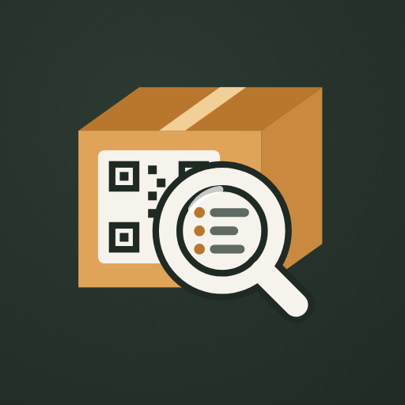

Datenschutz bei Inspacktor
Stand: 29. Oktober 2026 · gilt für die Android-App Inspacktor ab Version 1.0
Kurz gesagt: Alles, was du in Inspacktor einträgst, bleibt auf deinem Handy: Kisten, Gegenstände und Fotos. Es gibt kein Konto, keinen Server des Entwicklers, keine Werbung und keine Auswertung deines Verhaltens. Ich als Entwickler erhalte keine deiner Daten.
Die einzige Ausnahme ist technisch: Der QR-Scanner nutzt ML Kit von Google, und ML Kit schickt Google technische Nutzungs- und Leistungsdaten. Kamerabilder und gescannte Codes sind nicht dabei. Details stehen unten.
Verantwortlich
Anatolij Imgrund
E-Mail: anatolij.imgrund@gmail.com
Was die App speichert, und wo
Inspacktor speichert deine Einträge in einer Datenbank im privaten Speicher der App auf deinem Handy. Andere Apps haben darauf keinen Zugriff. Dazu gehören:
- Kisten: Titel, Standort, Beschreibung, Foto und der Code auf dem Etikett
- Gegenstände in den Kisten: Name, Beschreibung, Menge und Foto
- Fotos, die du aufnimmst oder auswählst (verkleinert, im privaten App-Ordner)
Die Daten bleiben gespeichert, bis du sie in der App löschst oder die App deinstallierst. Beim Deinstallieren löscht Android alles, was zur App gehört.
Berechtigungen
- Kamera: zum Scannen der QR-Etiketten und für Fotos von Kisten und Gegenständen. Die App fragt erst, wenn du zum ersten Mal scannst oder ein Foto machst. Das Kamerabild beim Scannen wird nicht gespeichert.
- Fotos aus der Galerie wählst du über die Bildauswahl von Android. Die App sieht dabei nur die Bilder, die du auswählst.
- Ordner für PDF und Sicherung: Die App darf nur in den Ordner schreiben, den du selbst auswählst, und nur die Datei lesen, die du zum Wiederherstellen auswählst.
Inspacktor nutzt kein Mikrofon, keinen Standort, keine Kontakte und keinen allgemeinen Zugriff auf deinen Speicher. Der Standort einer Kiste („Dachboden“, „Keller“) ist nur ein Text, den du selbst einträgst.
QR-Scanner mit Google ML Kit
Zum Erkennen der QR-Codes nutzt die App ML Kit von Google. Das Erkennungsmodell ist in der App enthalten. Das Kamerabild und der gescannte Code werden ausschließlich auf deinem Handy verarbeitet und nicht an Google gesendet.
ML Kit sendet jedoch technische Angaben an Google, mit denen Google die Erkennung überwacht und verbessert: Angaben zum Gerät und zur App (z. B. Modell, Android-Version, App-Version), eine zufällige Kennung pro Installation bzw. pro Scanvorgang, die nicht dazu gedacht ist, dich oder dein Gerät zu identifizieren, sowie Leistungswerte wie die Dauer der Erkennung und Fehlercodes. Die Übertragung ist verschlüsselt. Google gibt diese Daten nach eigener Aussage nicht an Dritte weiter. Ich als Entwickler sehe sie nicht.
Grundlage ist das berechtigte Interesse an einem funktionierenden, stabilen Scanner (Art. 6 Abs. 1 lit. f DSGVO). Wenn du das nicht möchtest, kannst du den Code eines Etiketts auch von Hand eintippen. Dann läuft keine Erkennung. Mehr dazu: Nutzungsbedingungen von ML Kit, Angaben von Google zur Datenerhebung und die Datenschutzerklärung von Google.
Wenn du selbst etwas teilst
Etiketten als PDF und die Datensicherung kannst du über das Teilen-Menü von Android verschicken oder ablegen, z. B. per E-Mail oder in Google Drive, oder an einen Drucker senden. Das geschieht nur, wenn du es auslöst. Für die weitere Verarbeitung gelten dann die Bedingungen des Dienstes oder Druckers, den du wählst. Eine Sicherung enthält alle Kisten, Gegenstände und Fotos. Bewahre sie deshalb so auf, wie du auch die Fotos selbst aufbewahren würdest.
Deine Rechte
Nach der DSGVO hast du das Recht auf Auskunft, Berichtigung, Löschung, Einschränkung der Verarbeitung, Datenübertragbarkeit und Widerspruch. Da deine Einträge nur auf deinem Handy liegen, kannst du sie dort jederzeit selbst ansehen, ändern, als Sicherung exportieren und löschen. Zu den Daten, die ML Kit an Google sendet, wende dich bitte an Google. Du hast außerdem das Recht, dich bei einer Datenschutz-Aufsichtsbehörde zu beschweren.
Änderungen
Ändert sich etwas an der App, das den Datenschutz betrifft, passe ich diese Seite an. Das Datum oben zeigt den aktuellen Stand.